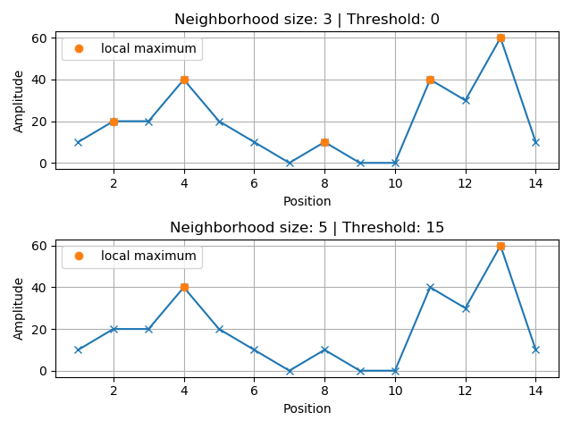

Source Material:
The approach for song fingerprinting and matching presented here was developed by Will Drevo, creator of the dejavu project. Although the actual implementation and presentation of CogWorks’ song fingerprinting project was created anew, overall attribution belongs to Will – the roadmap that his project provided was invaluable to this course.
Matching Audio Recordings¶
Spectrogram analysis enables us to transform our audio recordings to highlight a song’s most salient qualities: a song’s spectrogram reveals, quantitatively, the notes that are being played and the times at which they are being played. We ought to recognize the power (and beauty) of pure mathematics here – Fourier analysis is the driving force behind all of this. No amount of clever programming tricks could have gotten us here without this theoretical foundation; this is the power of applied mathematics in full force. But I digress. (Oh, and let’s not forget the critical role that physics played in guiding our intuition of breaking down sounds waves into superpositions of pure tones, and in the design of our microphone. Whoops! Did I digress again?)
Now it is time to put on our “programmer” caps and devise a pragmatic approach to matching audio recordings based on the information stored in their respective spectrograms. The approach that we will take here is not the solution to this problem, it is simply a solution and it is a solution that can certainly be improved upon. The song-matching algorithm that we devise should be:
Reliable and robust: we hope to successfully match brief recordings that are taken amidst moderate temporal noise.
Efficient: matching should be able to be performed in real-time.
Simple: the most sophisticated logic in the algorithm should be relegated to spectrogram analysis.
Modifiable: our code should enable us to experiment and iterate on aspects of our methods with ease.
Our project has two main modes of operation that it must facilitate:
Populating a database with song-IDs and their audio fingerprints, derived from “pristine” studio tracks.
Matching an audio recording, taken in real time, against said fingerprint database to identify the song being played.

Our first task is to distill from a song’s spectrum its most robust and salient features. This will ultimately enable us to efficiently compare songs to one another and maintain a database of song fingerprints that does not “break the bank” in terms of storage size.
Extracting Robust and Reliable Features¶
When we hold out a microphone to record an audio clip – so that we can identify the song being played – the spectrogram of that recording will contain the prominent features of the song amidst other ambient noises (maybe a chatty sibling in the background or a rumbling air conditioning unit). By comparison, the studio track, which we will use to populate our fingerprint database with that song, should have more fine musical details in its recording, in lieu of the background chatter. How can we distill from the spectrograms of the ambient recording and of the studio track the robust “markers” that are common between the two?
Local Maxima¶
A simple appeal to our intuitions can serve us well here: the loudest aspects of a song are those that will be picked up by a microphone amidst other noises, and consistent patterns among these “peaks” in our spectrogram will likely manifest across both our ambient and studio recordings. Remember that our spectrogram stores amplitude values, \(|a_k|\), across times and frequencies – these exactly reflect how loud or soft a pure tone frequency is in a song. Clearly, it will not suffice to merely extract the loudest feature, \((f_{|a|_{max}}, t_{|a|_{max}})\), from the song; rather, we will want to extract “local” peaks (i.e. local maxima) from the spectrogram. The “local” qualifier is an important one – it will ultimately be up to us to define the “neighborhood” that we will look at to assess if a point in our spectrogram is a local maximum.
We will identify a point as a “local” maximum by centering a neighborhood at that point and asking:
Is the value associated with that point larger than some minimum threshold?
Is the value associated with that point the maximum value in the neighborhood (even if other points in that neighborhood have the same maximum value)?
If we can say “yes” to both of these questions, then that point is a local maximum. We apply this set of conditions to every point under consideration to identify all of the local maxima in the landscape of data.
Let’s take a moment to view some amplitudes along just a single dimension so that we can find local peaks using a concrete example. Based on the stipulations made above, try to identify the local maxima in the following figure given: a neighborhood of size three and a \(0\)-threshold, and a neighborhood of size five and a threshold of \(15\). Note that a neighborhood of size \(3\) means that: when you are centered on a point it’s neighborhood includes a point to either side of it (hence the neighborhood includes three points in total).

The following figure reveals the local maxima under the prescribed conditions

Keep in mind that we will need to extend this process into two dimensions. The exercises on the next page in this site will step us through this process. We will be identifying the time and the frequency that locates each respective local peak among the Fourier coefficient magnitudes in the spectrogram. As mentioned earlier: these are the so-called “features” that we expect to remain salient across various recordings of a given song. Once we have done this, we will no longer be working with a full spectrogram’s worth of data to describe a song. Rather, we will only be dealing with these sparse features.

The spectrogram depicted above has its local peaks indicated by red dots. Our hope is to extract succinct, and robust patterns among these dots – i.e. fingerprints – that will manifest consistently across different recordings of the same song.
Forming the Fingerprints of a Recording¶
It is time for us to extract the “fingerprints” of an audio recording. These should be immutable patterns among the local peaks of a song’s spectrogram, which exist within brief, contiguous segments of the song. Critically, these fingerprints should describe brief sections of the recording; i.e. even if we play only a ten second clip from halfway through the song, we should be able to distill from that clip numerous salient fingerprints that can be used for matching.
In our approach to forming these fingerprints, let’s make a couple of important observations:
Assuming that the speed of a song’s playback is consistent across recordings, the frequency values of the prominent notes in the song should not differ appreciably between recordings. Thus, the frequency values of notes in a song are absolute: they can be incorporated directly into a given fingerprint.
The absolute time at which a note is played, which is measured from a song’s true beginning, cannot be known from any recorded clip. That being said, the time interval between notes will be consistent across recordings; thus our fingerprints should incorporate time only as a relative quantity.
The Relationship Between Two Peaks¶
With these considerations in place, let’s encode the relationship between two peaks. Consider local peak-\(i\), which resides at time \(t_i\) and frequency \(f_i\) – i.e. located at \((f_i, t_i)\) in our spectrogram (keep in mind that the rows of the spectrogram correspond to distinct frequencies, and the columns correspond to distinct times). And consider a subsequent peak, peak-\(j\) that resides at \((f_j, t_j)\), which either co-occurs with or occurs after peak-\(i\); i.e. \(t_i \leq t_j\). Then we can encode the relationship between these two peaks with the following simple expression:
where \(\Delta t_{ij} = t_j - t_i\). In accordance with our earlier considerations, this encoding treats time as a relative quantity: the temporal offset between two prominent notes should be consistent across recordings regardless of when the recordings begin within the song. Otherwise, we are able to record the frequencies of these peaks directly, since they should be immutable across recordings played back at the same speed.
We have arrived at a simple encoding that captures the relationship between two peaks in a recording. Our encoding was designed so that we are likely to see this simple pair feature occur in two recordings of the same song, and that we are less likely to see this pair feature manifest in different songs. That being said, there are considerations that must be made as to which pairs of peaks we will record from a recording’s spectrogram. It would be prohibitively cumbersome to record all pairs of peaks from a recording in this way. Furthermore, information about pairs of peaks separated by, say, one minute in a song, will be tenuous and clearly will not aid us in matching to a song based off of a brief recorded clip of that song.
The Fingerprint¶
We must be selective about the particular pairs of peaks that we record in order to summarize patterns in a given recording. Given a peak, we will record the pair encodings with that peak and the next \(n_\text{fanout}\) nearest neighboring peaks. The following plot illustrates the fingerprint associated with the peak occurring near the \(0.6\) second mark, using a “fanout” value of \(n_\text{fanout} = 5\).

Here, peaks are traversed in order of ascending frequency and then ascending time .
In general, peak-\(m\), which occurs at the location \((f_m, t_m)\) in the spectrogram, contributes the following “fanout” pattern to the recording’s fingerprint:
As we will soon see, it is also necessary to record the absolute time associated with this fingerprint, \(t_m\), measured from the beginning of the recording. These fanout patterns, collected in aggregate for all peaks in the audio recording, form the fingerprint for that recording.
Note that these neighboring peaks may occur at either the same frequency or time as peak-\(m\), but obviously at least one of these quantities will be distinct. We limit the number peak-pairs that we will record, for a given peak, to \(n_{\text{fanout}}\) pairs. This also roughly limits the span of frequencies and times that a fingerprint will likely involve, although we could also include explicit restrictions to enforce this (e.g. stop recording pairs if \(\Delta t_{i,j}\) exceeds five seconds).
With this approach to fingerprinting in-hand, let’s discuss how we can store fingerprints in a database and perform the matching process.
The Fingerprint Database¶
Our fingerprint database needs to hold the fingerprints of various songs, and we need to be able to efficiently query the database using new fingerprints in order to see if they match against any of our recorded songs. Python’s built-in dictionary object will elegantly fill this role for us. That is, our database will simply be a Python dictionary that stores fingerprints as follows:
its keys will be peak-pair encodings from the recording fingerprints: \((f_i, f_j, \Delta t_{ij})\)
each key will map to a list of song-IDs of all the songs containing that peak-pair encoding, along with the time associated with that fanout pattern in the recording: \([\dots, (\text{song-ID}, t_i), \dots]\)
This will afford us quick, \(\mathcal{O}(1)\) lookups in our song database, meaning that the time to check if a fingerprint exists in our database will not grow with the size of our database. This is of critical importance to the performance of our song-matching algorithm! Furthermore, Python’s pickle module provides us with a mechanism to save and load our dictionary. These are the essential elements of a fingerprint database!
Storing Fingerprints in the Database¶
It is likely that multiple songs will contain some identical peak-pairs, i.e. a given \((f_m, f_n, \Delta t_{mn})\) may be shared by multiple songs. Thus, we will need to maintain a list of associated song-IDs for all of the songs that a given peak-pair occurred in, along with the absolute time associated with each fanout pattern (measured from the beginning of its recording). A song-ID can be any unique identifier (a string, an integer, etc.) that distinguishes all of the songs in the database.
For example, suppose that we are adding the fanout pattern associated with peak \((t_m, f_m)\) of song-\(j\) to our database. We will append \((\text{song-}j, t_m)\) to the list associated with each key from this peak’s fanout pattern:
We can write this in pseudocode as:
# Adding fanout-m for song-j to the database
for (fm, fn, dt), tm in fanout_m:
database[(fm, fn, dt)].append(("song-j", tm))
As a concrete example, suppose that our dictionary database contains the mapping: \begin{equation} (100\;\mathrm{Hz}, 120\;\mathrm{Hz}, 1\;\text{sec}) \rightarrow [(\text{song-2}, 40\;\text{sec}),\; (\text{song-2}, 180\;\text{sec}),\; (\text{song-9}, 10\;\text{sec})] \end{equation} Then this means that the peak-pair with frequencies \(100\;\mathrm{Hz}\) and \(120\;\mathrm{Hz}\) – separated by a temporal gap of \(1\) second – occurs twice in song-\(2\) (at the \(40\) and \(180\) second marks of the pristine studio recording) and once in song-\(9\) (at the \(10\) second mark).
Storing Unitless Numbers
Each local peak \((f_i, t_i)\) occurring in a spectrogram has associated integer-valued bin-indices \((m, n)\), which indicate the row and column at which the peak resides in the spectrogram. Given that we always use the same configurations to produce the spectrogram for the recording, the scaling factors that relate time to a column-index and frequency to a row-index will be constant across all spectrograms. Thus we can use these integer-valued unitless quantities in our database in lieu of the physical temporal and frequency measures. Using the unitless integers help to prevent floating-point precision issues when performing matching, and they also take up less space in storage.
Querying the Database for a Match¶
Presuming that we have populated our database with the fingerprints of various songs, we can now query it for matches against another recording – this could be a song playing in the background that we want to identify. We do this by extracting the fingerprint of this recording, checking for the peak-pair encodings that match existing keys in the database, and tallying which song in the database has the most aligned peak-pairs in common with the recording. Let’s explain what is meant by “aligned” peak pairs.
Suppose that you begin recording the song starting \(25\) seconds after the song’s beginning, and that you record a clip for \(10\) seconds. The temporal locations of all of the common features between the full song and the clip should be offset by \(25\) seconds. E.g. a salient local peak that occurs \(32\) seconds into the full song would manifest \(7\) seconds into the clip. While we will not necessarily know when we begin recording any given clip, we can look for a consistent temporal offset between the clip’s peak-pair encodings and their matches in the database. In this way we can look to see that the fingerprints between a song and a clip are aligned consistently with a specific temporal offset. This is why we recorded the absolute time associated with a fingerprint in addition to the song’s ID.
Thus when we query a database with the fingerprints from the clip, we will tally the occurrences of \((\text{song-ID}, \Delta t^{\text{offset}})\). I.e. with a peak-pair taken from a fingerprint of the clip, we perform the following:
where \(\Delta t^{\text{offset}}_{\text{i,k}} = t^{\text{song}}_k - t^{\text{clip}}_i\) is the temporal offset between when a peak-pair encoding occurred in the song (i.e. the database recording) and when it occurred in the clip. The \((\text{song-ID}, \Delta t^{\text{offset}})\) instance with the highest tally indicates the song that most likely matches our clip. Our hope here is that we are filtering out spurious matches against partial fingerprints from other songs, and even spurious matches against the proper song – it is possible to match against the wrong part of the correct song after all – such that ensemble of matches provides a clear consensus as to which song we are hearing.
Conclusion¶
Finally we have all of the requisite pieces for our song-matching algorithm. We will use spectrogram analysis on each full song and on any recorded clip, and extract from them local peaks in the amplitude matrix of the spectrogram; from these peaks we form the fingerprint for an audio recording. In association with each peak, we record a so-called fanout pattern, which encapsulates information about that peak and its nearest neighbors. The collection of the fanout patterns associated with all of the peaks of an audio recording represents the fingerprint for that recording.
A simple Python dictionary will suffice as a database. Its keys are the peak pairs that form the fanout patterns, \((f_i, f_j, \Delta t_{ij})\), and each key maps to a list containing the song-IDs of the songs that feature this peak pair, along with the absolute time at which the pair occurs in each song. Once we have populated our database with the fingerprints of a number of songs, we can “name that tune” by querying our database with the fingerprint of the audio clip in question. We will tally the song-ID and time-offset pairs that are returned from our database as we query it; the most common song-ID and time-offset pair indicates the most likely match from our database!
Code For Reproducing Figures¶
Local Peak Landscape¶
import numpy as np
from mygrad import sliding_window_view
%matplotlib notebook
import matplotlib.pyplot as plt
# plot inital landscape without peaks
fig, ax = plt.subplots()
y = np.array([1, 2, 2, 4, 2, 1, 0, 1, 0, 0, 4, 3, 6, 1]) * 10
x = np.arange(1, len(y) + 1)
ax.plot(x, np.array(y), marker="o")
ax.grid(True)
ax.set_ylabel("Amplitude")
ax.set_xlabel("Position")
threshold = 0
maxes = sliding_window_view(np.pad(y, 1, mode="constant"), (3,), 1).max(1)
is_max = np.logical_and(maxes > threshold, maxes == y)
threshold = 15
maxes = sliding_window_view(np.pad(y, 2, mode="constant"), (5,), 1).max(1)
is_max2 = np.logical_and(maxes > threshold, maxes == y)
fig, (ax1, ax2) = plt.subplots(nrows=2)
ax1.plot(x, y, marker="x")
ax1.plot(x[is_max], y[is_max], ls="", marker="o", label="local maximum")
# plot peaks with neighborhood-3, threshold-0
ax1.grid(True)
ax1.set_ylabel("Amplitude")
ax1.set_xlabel("Position")
ax1.legend()
ax1.set_title("Neighborhood size: 3 | Threshold: 0")
# plot peaks with neighborhood-5, threshold-15
ax2.plot(x, y, marker="x")
ax2.plot(x[is_max2], y[is_max2], ls="", marker="o", label="local maximum")
ax2.grid(True)
ax2.set_ylabel("Amplitude")
ax2.set_xlabel("Position")
ax2.legend()
ax2.set_title("Neighborhood size: 5 | Threshold: 15")
fig.tight_layout()